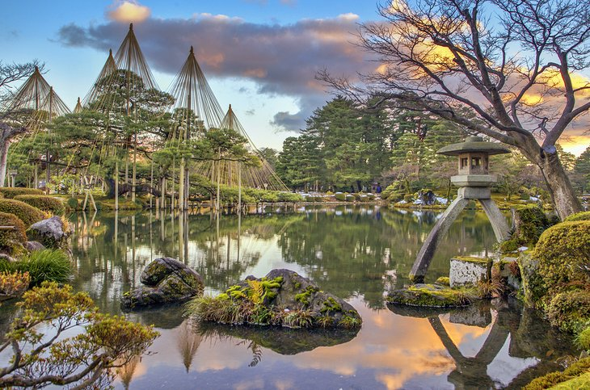

Mount Fuji
Without a doubt Japan's most recognizable landmark, majestic Mount Fuji (Fuji-san) is also the country's highest mountain peak. Towering 3,776 meters over an otherwise largely flat landscape to the south and east, this majestic and fabled mountain is tall enough to be seen from Tokyo, more than 100 kilometers away. Mount Fuji has for centuries been celebrated in art and literature and is now considered so important an icon that UNESCO recognized its world cultural significance in 2013. Part of the Fuji-Hakone-Izu National Park, Mount Fuji is climbed by more than a million people each summer as an act of pilgrimage, which culminates in watching the sunrise from its summit.
Hiroshima Peace Memorial Park
While little needs to be said here of the horrors of the atomic bombing of Hiroshima in August 1945, much can be said of the incredible efforts this vibrant city has made to commemorate the many victims of the world's first nuclear attack. Perhaps even more importantly, Hiroshima has become a symbol of lasting peace.
Osaka castle
Built in 1586 by famous Japanese warrior and politician Toyotomi Hideyoshi, Osaka Castle (Ōsaka-jō) was at the time the largest and most important fortress in the country. Although destroyed and rebuilt a number of times since, the present structure, built in 1931, remains true to the original.
